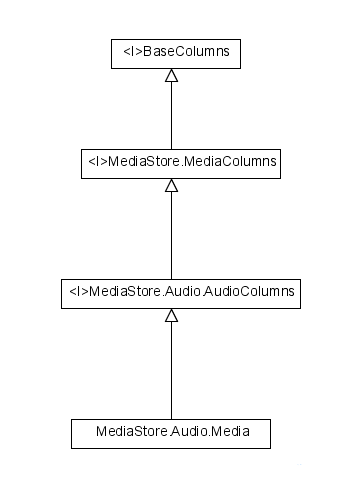
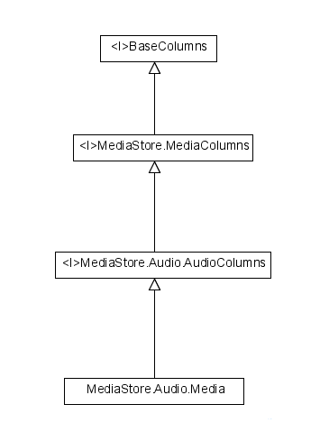

Android多媒体分析（三）通过MediaStore获取Audio信息
在此先说明一个类的继承关系，<I>表示接口

Android系统提供了MediaScanner，MediaProvider，MediaStore等接口，并且提供了一套数据库表格，通过Content Provider的方式提供给用户。当手机开机或者有SD卡插拔等事件发生时，系统将会自动扫描SD卡和手机内存上的媒体文件，如audio，video，图片等，将相应的信息放到定义好的
在此先说明一个类的继承关系，<I>表示接口

Android系统提供了MediaScanner，MediaProvider，MediaStore等接口，并且提供了一套数据库表格，通过Content Provider的方式提供给用户。当手机开机或者有SD卡插拔等事件发生时，系统将会自动扫描SD卡和手机内存上的媒体文件，如audio，video，图片等，将相应的信息放到定义好的